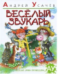

Веселый звукарь

Известный детский поэт Андрей Усачев позаботился о том, чтобы рифма "наука-скука" больше никогда никому не пришла в голову! Эта веселая книга о звуках и слогах написана стихами. Не простыми стихами, а стихами-подсказками.